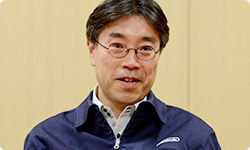
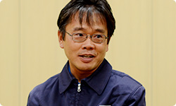
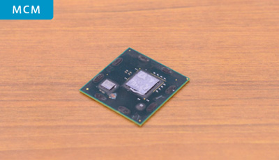
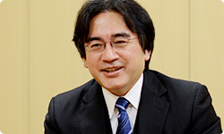
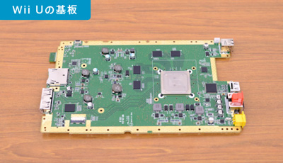
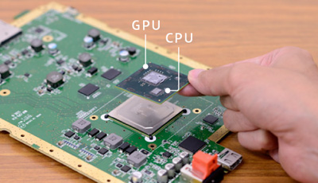

<div class="l-category-local-header">
<div class="category-local-header">
<div class="category-local-heading"><span>社長が訊く</span>
<div class="category-local-sub">IWATA ASKS


<div class="l-soft-topic-path is-block">
<div class="l-soft-topic-path-inner">
<div class="soft-topic-path">
<ul class="topic-path"><li class="topic-path-item"><span>『Wii U』 本体篇</span></li></ul>


<div id="page-container">
<header class="interviewheader">
<h2 class="interviewheader__ttl"><span class="subtext">社長が訊く</span>『Wii U』</h2>

</header>
<div class="tabmenu-container">
<p class="tabmenu__ttl">シリーズ一覧
<ul class="tabmenu__body tabnum12">
<li class="tabmenu__item tab1">本体 篇</li>
<li class="tabmenu__item tab2">Wii U GamePad 篇</li>
<li class="tabmenu__item tab3">Miiverse プロデュース 篇</li>
<li class="tabmenu__item tab4">Miiverse 開発スタッフ 篇</li>
<li class="tabmenu__item tab5">インターネットブラウザー 篇</li>
<li class="tabmenu__item tab6">Wii U Chat 篇</li>
<li class="tabmenu__item tab7">New スーパーマリオブラザーズ U 篇</li>
<li class="tabmenu__item tab8">ZombiU（ゾンビU） 篇</li>
<li class="tabmenu__item tab9">Nintendo×JOYSOUND Wii カラオケ U 篇</li>
<li class="tabmenu__item tab10">Nintendo Land 篇</li>
<li class="tabmenu__item tab11">Nintendo TVii 篇</li>
<li class="tabmenu__item tab12">Wii Street U powered by Google 篇</li>
</ul>

<div class="hero-container">
<div class="hero__img">
<p class="hero__note">本文の一部を引用される場合は、必ず、本ページのURLを明記、<br>または本ページへのリンクをしていただくようお願いいたします。

<div class="interviewsubheader">
<div class="interviewsubheader__ttl"><h2>本体篇</h2>

<div class="pageindex-container">
<p class="pageindex__ttl">目次
<ul class="pageindex__body">
<li class="pageindex__item active">1. テレビが変わった</li>
<li class="pageindex__item">2. ハードは“黒子”</li>
<li class="pageindex__item">3. “マジック”</li>
<li class="pageindex__item">4. テレビに寄生しないゲーム機</li>
</ul>

<div class="interview-container">
<h3 class="interview__ttl">1. テレビが変わった</h3>

岩田
: ６年前、<span>「社長が訊く Wiiプロジェクト」</span>（※1）で<br>「社長が訊く」という企画が偶然のようにはじまって、<br>まさかこんなに長くつづくとは、想像もしていませんでした。<br>今回、Wiiの後継機ができて、<br>もう一度お話を訊けることに感慨深いものがあります。<br>&nbsp;<br>これからしばらくの間、<br>Wii Uというハードがいかにつくられたかという話を<br>シリーズでお訊きしようと思います。<br>今日はよろしくお願いします。


一同
: よろしくお願いします。

※1「社長が訊く Wiiプロジェクト」＝「社長が訊く Wiiプロジェクト～Wiiが誕生したいくつかの理由～」。２００６年９月に掲載された、「社長が訊く」連載のきっかけとなったインタビュー企画。


岩田
: まず、みなさん自己紹介をお願いします。<br>改めて紹介していただくまでもないですが、<br>ハードウェア開発の、当社における責任者をされている<br>竹田さんです。


竹田
: 竹田です、よろしくお願いします。


塩田
: 総合開発本部開発部の塩田です。<br><span>Wii U本体やWii U GamePad</span>など、<br>ハードウェア開発全般を監修しています。




岩田
: 塩田さん、今回、ハードウェア開発全般といっても、<br>据置型と携帯型を両方いっぺんに<br>つくるようなことになってしまいましたよね（笑）。


塩田
: はい、そうです（笑）。<br>携帯型の要素を参考にしながら、<br>Wii U GamePad側の開発をしてきたという意味では、<br>据置型、携帯型の２機種を<br>同時開発したような印象があります。


北野
: 総合開発本部開発部の北野です。<br>Wii U本体の開発では、機構設計にかかわりました。<br>筐体設計以外にも熱設計、コネクタや<br>ケーブルの設計も行いました。


赤木
: 総合開発本部開発部の赤木です。<br>みなさんはハードを担当された方々ですが、<br>わたしだけソフト担当です。<br>ただソフトといっても、<br>お客さんが遊ぶゲームソフトではなくて、<br>本体をつくる工程で必要となる、<br>検査プログラムを担当しています。




岩田
: はい、ありがとうございます。<br>まず新しいゲーム機をつくるのに、<br>いちばん時間がかかるのは<br>“部品の選定と検討”になるんですが、<br>Wii Uはどうやってはじまったんですか？


竹田
: まず基本的に、日本中のテレビが全部、<br>地上波デジタルのいわゆるＨＤ（※2）になったんです。<br>世の中のだいたいがＨＤ化されたということは、<br>逆にいえば“ＨＤがＳＤ（※3）になった”ということです。


岩田
: ＨＤがスタンダードになった、ということですね。

※2ＨＤ＝High Definition（ハイデフィニション）の略。テレビなどにおける高解像度（高精細、高画質）のこと。映像のピクセル数が多く、７２０本以上の走査線数を保持し、かつアスペクト比が１６:９であることが条件。高解像度の映像を扱う地上波デジタル、ＢＳデジタルなどのテレビジョン放送をＨＤＴＶと呼ぶ。
※3ＳＤ＝Standard Definition（スタンダードデフィニション）の略。テレビなどにおける標準画質、標準精細度のこと。走査線数が７２０本に満たないもの。


竹田
: はい。一方でWiiはＳＤを使っています。<br>「家庭のテレビが、ほとんどすべてＨＤに変わったんだから、<br>　家庭用ゲーム機 Wiiも<br>　みなさんにその恩恵を受けていただけるように、<br>　我々もその標準に合わせよう」<br>というのがキッカケです。<br>あらゆる家庭で同じような条件で、<br>同じように楽しんでいただけるものをつくるのが、<br>我々の考えかたですから。


岩田
: あと、ビデオゲーム機からテレビに映像を入力する端子も、<br>むかしの黄色い端子（※4）から、<br>ＨＤＭＩ（※5）に変わっています。<br>テレビが変わったんだから、テレビとセットで使う<br>テレビゲーム機が変わらなければいけないということは、<br>ある意味、必然だったんですね。

※4黄色い端子＝オーディオ・ビジュアル機器に映像・音声信号を伝送するために利用される端子のひとつで、一般的にはコンポジットビデオ端子と呼ばれるもの。映像信号は黄色い端子、ステレオ音声信号は赤と白の端子で色分けがされている。
※5ＨＤＭＩ＝High-Definition Multimedia Interface（高精細度マルチメディアインターフェース）の略。家電やＡＶ機器向けのデジタル映像や音声入出力インターフェースの標準規格。１本のケーブルで映像、音声、制御信号を合わせて送受信できる。


竹田
: そうです。それともうひとつ、<br>２４時間リビングルームに置く機械だから、<br>Wiiでは実現できなかった、ゲーム以外のいろんなことも<br>楽しんでいただきたかったんです。<br>そのためにも、どのようにしてお手頃の値段にできるのか、<br>それでいてしっかりとした性能を実現させられるかが、<br>知恵の出しどころでした。


岩田
: それは「Wiiプロジェクト Wiiハード編」のときに話していた<br>“ローパワー、ハイパフォーマンス”の発想（※6）と、<br>通じるものがありますね。


竹田
: ええ。どのように消費電力を抑えて<br>ゲーム・コンピューター性能を効率よくするかは、<br>任天堂のゲームキューブ（※7）からの流れがあって、<br>その思想にのっとっているところでもあります。

※6“ローパワー、ハイパフォーマンス”の発想＝「社長が訊く Wiiプロジェクト～Wiiが誕生したいくつかの理由～」vol.1 Wiiハード編にて、竹田が述べていた発想。下記のコメント参照。『当然のことですが、性能が二の次、というわけではないんです。「ローパフォーマンス、ローパワー」は誰でもできる。「ハイパフォーマンス、ハイパワー」を、ほかの人たちは目指す。そういうなかで、わたしたちはWiiで「ローパワー、ハイパフォーマンス」というのを追求したわけなんです。』
※7ゲームキューブ＝ニンテンドー ゲームキューブ。２００１年９月発売の家庭用テレビゲーム機。


岩田
: 今回、“ローパワー、ハイパフォーマンス”を<br>実現するためのキーは何でしょうか？


竹田
: まずは初めてのマルチコアＣＰＵ（※8）の採用です。<br>複数のＣＰＵコアをひとつのＬＳＩチップに持つことで、<br>ローパワーでＣＰＵコア間や内蔵の大容量メモリーとの連携がうまくでき、<br>非常に効率のよい処理をすることが可能になりました。

※8マルチコアＣＰＵ＝ひとつのパッケージの中に、命令を実行する複数のプロセッサーコア（ソフトウェアを動作させるためのハードウェア）を持っているＣＰＵのこと。


竹田
: そしてＭＣＭ（※9）の採用です。


<div class="interview__photo-l">



※9ＭＣＭ＝Multi Chip Module（マルチチップモジュール）の略。基板の上に、ベアチップと呼ばれるむき出しのシリコンチップを、複数個搭載しているモジュールのこと。


竹田
: 先ほど説明しましたマルチコアＣＰＵチップと<br>ＧＰＵ（※10）チップをひとつのパッケージに入れる<br>ＭＣＭ技術を本格的にゲーム機に採用しました。<br>このＧＰＵチップにもかなり大きなメモリーが内蔵されているんですよ。<br>このＭＣＭによって、ＩＣパッケージのコストが下がったり、<br>ＬＳＩチップ間のデータのやり取りを速くできたり、<br>消費電力も下げられたりします。<br>それと分業化で、コスト的にも安くあがります。

※10ＧＰＵ＝Graphics Processing Unit（グラフィックス プロセッシング ユニット）の略。グラフィックスチップ、またはビデオチップとも言う。パソコンやゲーム機の表示画面を描画するための専用チップ。


岩田
: 今回の大きなチャレンジとして、<br>異なる半導体の工場でつくったシリコンチップを<br>ひとつのパッケージに入れる、<br>という選択があったわけですよね。<br>塩田さんは実際に推進しなければいけない当事者として、<br>どんなことがハードルでしたか？


塩田
: 違う会社さんでＬＳＩをつくっていますから、<br>不良が出たときの原因を切りわけることが難しかったんです。<br>不具合解析をするにも、<br>ＭＣＭの中にとじ込められているので、<br>問題を探る方法が非常に困難でした。


岩田
: 実際に動いているときは<br>ひとつの箱に入っているから、<br>中で起こっていることを簡単に観察できないんですね。


塩田
: そうです。でもご協力いただいた<br>ルネサス（※11）さん、ＩＢＭ（※12）さん、<br>ＡＭＤ（※13）さんから、本当に知恵をいただきました。<br>不具合を切りわけるために必要な最低限の信号を<br>ＭＣＭの外に出したりして、<br>最小のオーバーヘッド（※14）で検証ができるような<br>方法を編み出せたと思います。

※11ルネサス＝ルネサス エレクトロニクス株式会社。東京都千代田区に本社を置く、半導体メーカー。
※12ＩＢＭ＝International Business Machines Corporation。アメリカ合衆国ニューヨーク州に本社を置く、コンピューター関連のサービスおよび製品を提供する企業。
※13ＡＭＤ＝Advanced Micro Devices, Inc. アメリカ合衆国カリフォルニア州に本社を置く、コンピューター関連の開発、製造、販売を行う企業。
※14オーバーヘッド＝何かの処理を行う際、本来の処理に加えて、余分にかかる負荷のこと。


岩田
: でも、そこに至るまで、<br>一筋縄ではいかなさそうですね。


塩田
: はい。過去の実績から<br>データを集めながら決めていったんですが、<br>実際に動かして初めて気づいたことをフィードバックしていく、<br>という泥臭いことを、何度も取り組んでいきました。


竹田
: やっぱり違う会社さんですから、<br>一般的に、不具合や新しい挑戦に対して<br>「自分のところの責任ではないです」となるんです。


岩田
: そもそも、不具合があるなら<br>はじめから直しているはずですからね。<br>プログラマーも、つくったプログラムを動かす瞬間は<br>「動くに決まっている」と思ってキーを叩くものですから、<br>「動かない」と言われたら、<br>「自分以外の何かが悪いのでは？」と思うものなんです。<br>それと同じで、異なる半導体メーカーさんのチップを<br>ひとつのパッケージに入れれば、うまくいかないときに、<br>「自分以外の何かが悪い」と考えるのが普通なんですね。<br>そんな中、塩田さんはどう旗ふりをしていったんですか？




塩田
: 一言でいいますと、<br>「自分の身の潔白は、自分の身で証明してください」<br>という方針を採りました。


岩田
: へぇ～、それは、面白いですね（笑）。


塩田
: パッケージに入れる前のＬＳＩについて、<br>検査漏れがない、テストができる仕組みを<br>確立しようとしたところ、<br>各社さんが非常に強固な検査法を編み出してくれました。<br>それで不良が出る可能性を大きく下げられましたし、<br>しっかり積み上げたデータをもとに、<br>不良解析用の大事な情報も提供してもらえました。


岩田
: そのプロセスは、スムーズに進みましたか？


塩田
: そこまでいくのに、やっぱり時間はかかりました。<br>最初は「こんな工程を入れると、たくさんつくれない」とか、<br>「生産設備の投資が非常に大きくなる」<br>みたいな話が出てくるんです。<br>ただ知恵を出し合うと、解決方法って見つかるもので、<br>既存の検査設備にちょっと手を加えるだけで<br>非常に効率のいいテストができるようになったり、<br>強力なテストパターンが見つかったりしたので、<br>何とか実現できたのかなと思います。


岩田
: これだけのことができるシステムの心臓部が<br>ワンチップになっているというのは、<br>まだあんまり例がないんじゃないですかね。


塩田
: これまでまったく例がないわけじゃないですが、<br>これほど大量生産するもので、<br>これだけのパフォーマンスのＣＰＵとＧＰＵが、<br>ひとつのパッケージに入っているものは<br>あまり例がないと思います。<br>こちらがＭＣＭのついた基板です。


<div class="interview__photo-l">


岩田
: 心臓部はこのチップ１個に収まっているんですね。<br>ゲームキューブやWiiでは、<br>心臓部が２個のチップにわかれていましたけど、<br>今回、ＭＣＭにこだわったのは、<br>やはり手ごたえがある、と感じていたからですか？


<div class="interview__photo-l">


塩田
: はい。竹田さんの話にもありましたように、<br>消費電力を下げるのは<br>ゲームキューブから引き継いでいる姿勢で、<br>この小さいパッケージにＬＳＩを閉じこめることで、<br>ＬＳＩ間のやり取りに必要な電力が、うんと下がるんです。


岩田
: 物理的に、基板の上で<br>場所が離れたチップの間を流れる電力に比べて、<br>小さいモジュールの中だと、<br>少ない電力でやり取りができるんですよね。<br>遅延も少なくなるので、スピードも出しやすいですし。


塩田
: はい。それに、ひとつの小さい<br>パッケージに閉じこめることで、<br>基板上の実装面積も小さくできるんです。<br>筐体の小型化にも貢献できるため、<br>何としても、やりたかったんです。


<li class="pagination-next"><span>2. ハードは“黒子”</span></li>
</ul>
<div class="listbtn-container">
<p class="listbtn__item">社長が訊く 一覧

